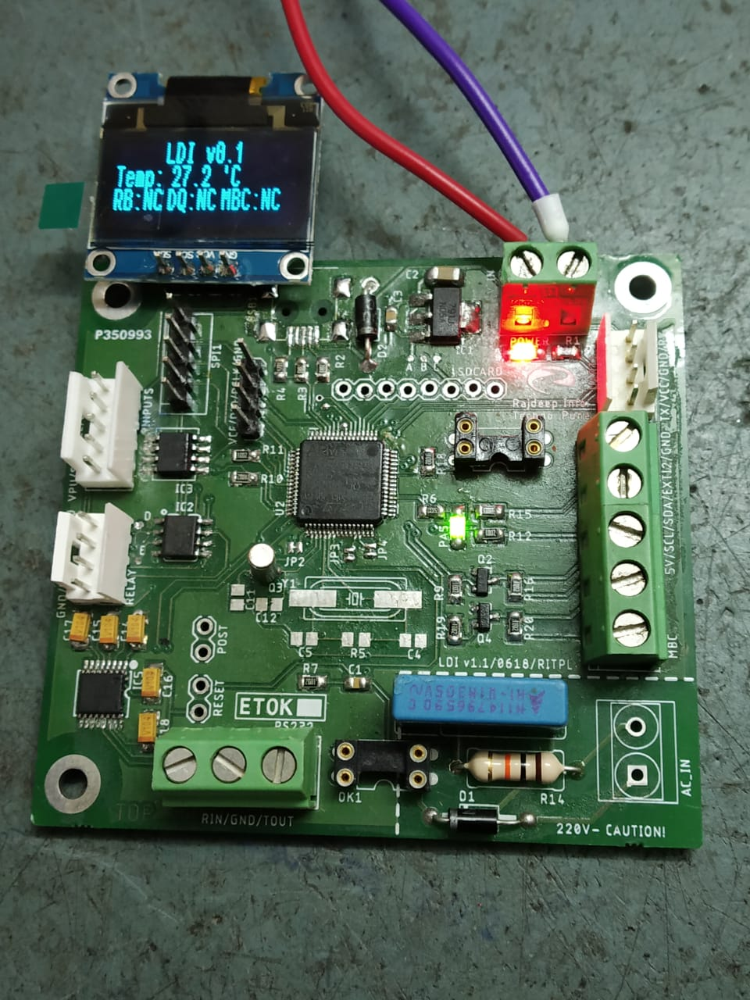

Introduction
Greetings! I was asked to provide a list of projects as well as the details of three projects for a technical interview and hence I am sharing this document with you. I wanted to take advantage of the digital age and share the required information in a manageable way and this page contains all the relevant details I could muster in a day.
I have included necessary links to github repositories, blog posts, Youtube Videos and external Links where possible.
Projects In Three
Here are three project I would like to share first. The first project is one I recently worked on for my last employer and the other two are ones that were meant to demonstrate versatility and my ability to work under stressed timelines.
1. Lane Data Integrator
A Project For my last Employer - Rajdeep IT Pune.

Project Type: Closed Source
Microcontroller: STM32F030 and STM32F072 and STM32F103
Key responsibilities: Board Bring-up and Firmware Design
Tools Used Keil uVision, Autodesk Eagle
The Lane Data Integrator (henceforth refered to as LDI) is a Microcontroller based device that interfaces some sensors as well as other sub-modules. It talks to a host computer via a UART or USB depending upon the chip being used. All the above mentioned Microcontrollers are pin compatible but vary in peripherals and price.
The system is divided into three parts which include a relay board and a data aquisition board both of which talk to the main board over I2C. I2C GPIO expansion chips are used there is an on-board temperature sensor as well. An additional SPI port is used to interface an SDCARD for storage and other functions as well as interface external ADCs.
The firmware is written in modular format and includes a custom communication protocol based on the Tag-Length-Value system. I did a write-up on a generic process HERE, however, in my implementation I used pointers to functions for the states instead of enumerated data types and switch statements.
A hardware timer is used in place of a scheduler and is used in the main loop to track tasks. A software timer class is used to generate timeouts and other events for the protocol etc. There is also a frequency counter module that counts the frequency of the AC power signal which is converted into a set of digital pulses in hardware.
The LDI also interfaces with an external control panel with LEDs and push buttons. This external device also talks over I2C but uses interrupts to signal events. The final hardware was completed with a two layer PCB and will be used in other products as well.
2. Siemens IoT2020 Boiler Controller
Entry into a Design Contest - Awarded Second Place

Project Type: Open Source
Microcontroller: x86 based Siemens IOT2000 platform, Arduinos
Key responsibilities: Project Conceptualization, Design, Hardware, Prototpying, Firmware, Software
Tools Used Python, C++, Node-Red, JavaScript/NodeJS, MQTT
The IoT Boiler Controller was based on the Siemens IOT2000 platform which is a spinoff from the Intel Galileo 2 hardware. It runs a trimmed down version of Yocto Linux and exposes GPIOs and peripheral pins.
The concept of the boiler controller is to be able to sense boiler heat levels and control the level of fuel going into the furnace. A user should be able to see the process on a dashboard as well and to be able to regulate certain parts of the process. The IOT2020 talks to a number of peripheral devices via serial, I2C and TCP/IP channels. These devices are based on Arduinos to make the demo easier to understand and keep the IOT2020 in the limelight. Each peripheral interfaces with a sensor such as a Temperature sensor, a Flow Rate Sensor and level sensor.
The Fuel pump is controlled by a relay over a USB/Serial link and the application is written in C++. This application also runs as a TCP/IP to Serial bridge and waits of connections and acts as a TCP/IP server. The TCP/IP client that issues these commands can be anything on the network but in this case is the Node-Red application.
The Node-Red application is written as a flow graph and sends commands over the TCP/IP connection to control the pump. The sensor data is read over MQTT as a temperature and flow sensors are implemented on an Arduino which sends the relevant data at a regular frequency.
Node-Red generates a local dshboard which also include some software buttons to enable or disable the automatic process. The complete write-up and code can be found HERE
3. Internet Connected Light
Entry into a Design Contest - Awarded First Place

Project Type: Open Source
Microcontroller: CC3200
Key responsibilities: Project Conceptualization, Design, Hardware, Prototpying, Firmware, Software
Tools Used C++, JavaScript, HTML, CSS, MQTT
The IoT Light employs the Texas Instruments CC3200 Cortex M4F chip with Wi-Fi to work an LED Lamp that can be controlled over the Internet. MQTT is employed and commands are sent over the web unencrypted for this particular demo.
The hardware consits of a Texas Instruments CC3200 Lauchpad, a TPS92512 LED driver and a wall-wart along with two white LED panels. The module was designed in Autodesk Eagle and assembled by hand.
The firmware is written in C++ using the Code Composer Studio IDE for debugging. The MQTT code is inherited from the Eclipse PAHO project and integrated with the PWM control routines. For the UI, a HTML/CSS webpage was written (it is still live here) and uses the web-browser as the MQTT Client.
The complete write-up is up on Texas Instrument's Own Power house Blog
I also did a recent article on Hackaday.com which uses a BLE device instead of the CC3200.
Projects Timeline
I did a number of other projects for my previous employer however I cannot document the details due to an Non Disclosure Agreement. I am including the basic information though and can discuss some details verbally.
2018: Lane Data Integrator
Project Type: Closed Source
Microcontroller: STM32F030 and STM32F072 and STM32F103
Key responsibilities: Board Bring-up and Firmware Design
Tools Used Keil uVision, Autodesk Eagle
This project is discussed above
2017: AVC5
Project Type: Closed Source
Microcontroller: STM32F103
Key responsibilities: Designer and firmware engineer
Tools Used Keil uVision, Autodesk Eagle
The heart of the Toll Automation Solution provided by RITPL is it’s Automated Classifier System or AVC. It’s front-end contains a scanning system with a larger number of IR transmitters and receivers that facilitate the generation of a monochrome side profile of the vehicle. In the 5th iteration, the design was greatly simplified by replacing the FPGA with a microcontroller and other digital components. The system generates a side profile of a passing vehicle which is fed to the actual classification system.
2016: Electronic Call Box
Project Type: Closed Source
Microcontroller: Single Board Computer based on ARM
Key responsibilities: Designer
Tools Used C++
Used in the Highway stretch, the Electronic call box is used by people experiencing difficulties to call for help. It has a single button that allows a direct connection to an operator. Inside, the mic and speaker are interfaced with an echo cancellation chip and then to a single board computer running Linux that takes care of sending the encoded voice to a central exchange server. In case the network backbone fails, there is a GSM module that is employed as a backup. A secondary management board takes care of monitoring things such as battery voltage, solar panel and battery currents and works as a charging controller. It also makes sure the SBC is shut-down properly in case the battery voltage drops below a particular level. We later forked off another project from this one with an only GSM option for locations where a fibre backbone is not present.
2015: Vehicle Separator 2
Project Type: Closed Source
Microcontroller: STM32F030
Key responsibilities: Designer
Tools Used C++, Keil uVision, Autodesk Eagle
The Vehicle separator uses several beams of light and a magnetic loop sensors to signal the parent system that a vehicle as ended or a new one has begun. This device is required because weight-in-motion or WIM systems estimate the weight of an entire vehicle by extrapolating from a set of single axel weights. The system must be able to club together, the weights from individual hits to be reliable. The magnetic loop tends to fail when the ground clearance of a vehicle exceeds a particular limit. The VS2 runs a beam scanning routine to determine if a vehicle is present or not and sends the data over a serial port.
2014: Highway Traffic Management System: Proof-of-concept
Project Type: Closed Source
Microcontroller: multiple
Key responsibilities: Designer
Tools Used C++, Keil uVision, Cadence OrCAD, Visual C++,
In the early phases of developing a complete Highway Traffic Management System, costly hardware such as the Meteorological system as well as traffic counters needed to be emulated. Small systems were designed to sent the same data captured from cheaper hardware or even randomly generated values to sever as a proof of concept. Communication was enabled over ethernet for all mock devices.
2014: Length Measurement System
Project Type: Closed Source
Microcontroller: multiple
Key responsibilities: Designer and Tester
Tools Used C++, Keil uVision, Cadence OrCAD, Visual C++, OpenCV
For one particular requirement, we were asked to record the exact the length passing vehicles. This included overhangs such as pipes etc that are typically longer than the vehicle itself. A horizonal variant of the Vehicle Separator was used in conjunction with a camera based software written in C++ using the OpenCV framework. The lanes were calibrated on setup and the system was used to approximate the length of a vehicle in the said lane.
2013: Lane Status Display Unit
Project Type: Closed Source
Microcontroller: AT89C51
Key responsibilities: Firmware
Tools Used C++, Cadence OrCAD
In a requirement, a client needed a system to collect data from across all the toll lanes and send this data over ethernet so that it can be displayed in a central location- namely the plaza head office. Each lane was supplied with a microcontroller based system that tapped into sensors such as Magnetic Loop Sensors, Barrier Limit Switches and other sensors. This information was passed onto a service running on a PC via UART which was then sent over the network to a plaza.
2012: Panic Alarm
Project Type: Closed Source
Microcontroller: AT89C51
Key responsibilities: Firmware
Tools Used C++, Cadence OrCAD
A silent alarm system that can be triggered from the toll lane to alert the authorities at the main plaza, this system operates over a variant of ModBus on a microcontroller. The idea is to send a packet of data to the plaza when a button is pushed. The plaza master then uses the ID to update a message board with a set of alarms and LEDs.
2012: Manual Booth Controller
Project Type: Closed Source
Microcontroller: AT89C51
Key responsibilities: Firmware and board bring-up
Tools Used Assembly, C++, Cadence OrCAD
The manual booth controller was an application that allowed the control of Lane equipment independently of the Lane PC. The MBC controls appliances such as the Boom Barrier as well as the Overhead Lane Signal and traffic Light. When the system is functioning properly, the MBC enables control over UART to the PC software. In case the PC fails or if an override key is used, the MBC enables onboard buttons to manually operate the equipment.
2008-2012: Lane Data storage
Project Type: Closed Source
Microcontroller: FPGA- NIOS II Softcore Controller
Key responsibilities: HDL, Firmware,
Tools Used Altera Cyclone II, Quartus II, OrCAD
One of my first projects with RITPL, the idea was to have a device that can receive AVC data over a serial port and then compress it. The data was also time stamped and stored onto an SDCARD which would be retrieved later. Additionally, a second serial port allowed for the compressed data to be retrieved by the PC software to do with as required. The LDS stores data in case of power failure as well and acts as PC software crashes. The system was build on the Altera (now Intel) FPGA ecosystem, the Cyclone III, Quartus II IDE and includes the NIOS II softcore Controller along with DDR Controller IP cores. The algorithm also processes the incoming data stream to determine certain characteristics and then perform the required operations. RTC interfacing was done in VerilogHDL while the compression as well as processing was done using the NIOS II processor.
Other projects and writeup
Here is a list of other open source projects done over the last decade. The code and details are availabel as well on github.
BLE and MQTT Mashup using NodeJS
I made a simple project where I used NodeJS code on a Laptop to talk to a BLE Light and also act as a bridge between an MQTT message stream. That way I could control the light from over the internet. Internet of Things on the cheap. The full article and demo video is available here
Cypress PSOC based Office Power Consumption Optimizer
The project was an entry into an online design contest and uses a CY8C4AXX in addition to a Raspberry Pi. The PSOC interfaces with the sensors such as temperature and PIR motion sensors and communicates with the RPi over I2C. There is a python script that talks to the RFID reader as well as the PSOC. This data is relayed to an OpenHAB 2 service that is used to generate the GUI and execute the rules engine. A user can login using the RFID tag and disable a security system and activate appliances. Once the user is done and wants to logout, he may do so by pressing a button and the appliances are shutdown one-by-one and the security system is enabled after a delay. This can be done remotely as well.
The complete writeup and links to the code along with Youtube videos is at Here
The internet of holiday lights
One of my favourite projects, this one uses a Raspberry Pi and Arduinos with a lot of manual stuff. It was submitted as an entry to a Element14 Design Challenge and uses OpenHAB. It has a lot of components that I built up and came out great with the featured twitter integration. The writeup and video are available at here